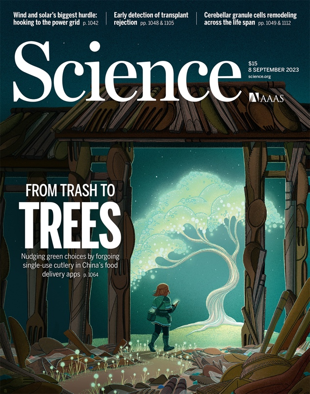
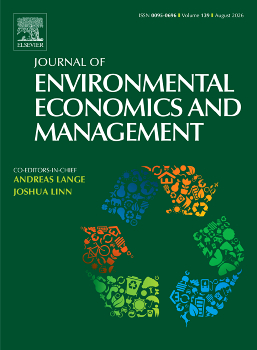
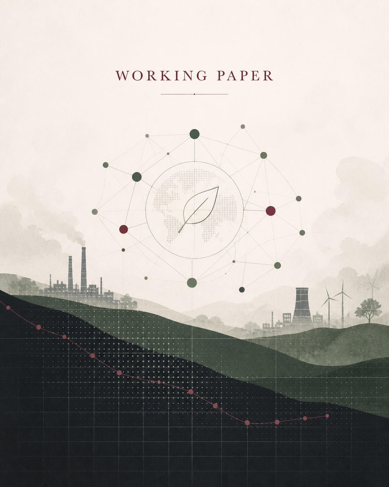

Publication
Reducing Single-Use Cutlery with Green Nudges
Science, 2023. With Guojun He, Albert Park, Yasuyuki Sawada, and Elaine S. Tan.
View publications
Applied Microeconomics · Peking University
I am an applied microeconomist and a tenure-track assistant professor at the Institute for Global Health and Development at Peking University. My work lies at the intersection of environmental economics, health economics, and development economics.
I use applied microeconomic methods to study how environmental regulation and public policy shape environmental quality, population health, and incentives in health care systems. Much of my research combines large administrative or spatial data with causal inference to understand policy design and its consequences.
Before joining Peking University, I completed my postdoctoral training at the University of Hong Kong. I received my PhD from the Hong Kong University of Science and Technology and my bachelor's degree from Beijing Normal University.
Email yhpan@pku.edu.cn
Featured Work
Publication
Science, 2023. With Guojun He, Albert Park, Yasuyuki Sawada, and Elaine S. Tan.
View publications
Publication
Journal of Environmental Economics and Management, 2025. With Guojun He and Takanao Tanaka.
View publications
Working Paper
With Guojun He and Yang Xie.
View working papers
Research Areas
How should environmental policies be designed when information, incentives, and local externalities matter?
How do environmental and public policies affect mortality, cognition, mental health, and well-being?
How do physicians, patients, and institutions respond to incentives within health care systems?